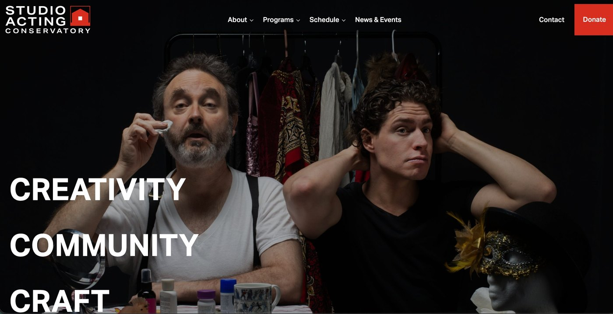
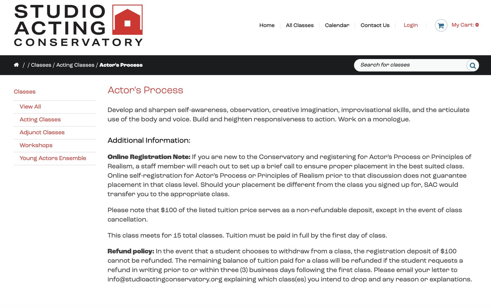

Studio Acting Conservatory
A new website and an easier path to registration
When the Studio Acting Conservatory invested $60,000 in a new website, I advised on the rebuild as a board member. Having been a student and taught there since 2018, I brought a practical understanding of the school, its students, and the conversations that help people find the right class.
A long relationship with the school
I first came to the conservatory as a student. Its founder, Joy Zinoman, became a mentor. In 2018, I began teaching voice in the young actors program and later taught acting. I’ve taught there ever since.
When the conservatory began separating from Studio Theatre around 2018–2019, it needed its own website. Until then, its online presence had lived within the theater’s site.
I joined the initial working group planning that transition. Another community member built the first standalone site using React and WordPress. It gave the school an independent online home, but routine changes depended heavily on the developer who had built it.
The next website needed to be something the school’s small staff could maintain themselves.
My role in the rebuild
By the time the conservatory began planning the redesign, I was serving on its board. We selected Viget, and I joined the executive director and the original developer in weekly meetings with the agency.
I participated throughout the UX research, information architecture, and visual design process. I wasn’t responsible for writing code or managing the project timeline. My role was to evaluate proposals, ask questions about how the site would work in practice, and help the school make decisions about the investment.
Being a teacher mattered here. I knew the programs and had firsthand experience with students’ questions. I could bring that perspective to discussions about how the school presented its classes and handled registration.

Making registration easier without losing the conversation
The most important decision concerned enrollment.
The conservatory had traditionally handled registration primarily by phone. That wasn’t simply an outdated process. With no audition requirement, the call gave staff a chance to explain the rigor of the training, learn about a prospective student’s experience, and help them choose a class.
Moving registration online would make signing up easier, but we didn’t want to lose that guidance.
We settled on an approach that kept both. Students can register online, including for introductory classes. When a new student enrolls in one of those classes, a staff member follows up by phone to discuss placement and make sure the class is a good fit.
The conversation remained part of the process, but it no longer had to happen before someone could sign up.

What changed
The new site launched in 2025. Staff can maintain it in WordPress without relying on a developer for routine updates, and students have a more direct path from exploring classes to registering.
In board reporting since the launch, student registration has been described as exceeding expectations. The executive director has also described the site as worthy of the conservatory’s heritage and reputation.
Those are different kinds of feedback, and both matter: whether people can sign up, and whether the website represents the school they’ll find when they arrive.
What this shows about my work
On this project, I contributed through advice rather than implementation. I brought technical experience, an understanding of the school’s operations, and a teacher’s perspective to decisions made with staff and the agency.
The registration process is the clearest example. The phone call served a real purpose. The task wasn’t to remove it because online registration was available—it was to put it where it could help students without making enrollment harder.